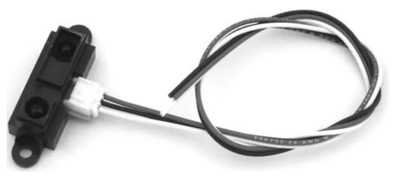
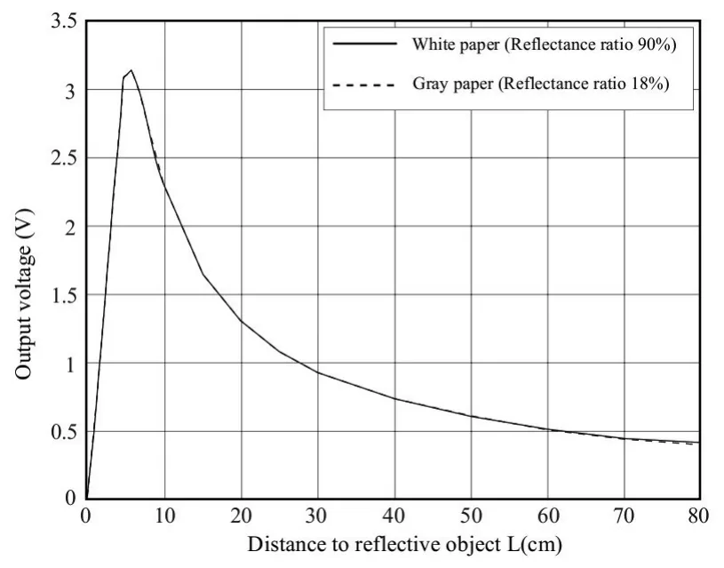
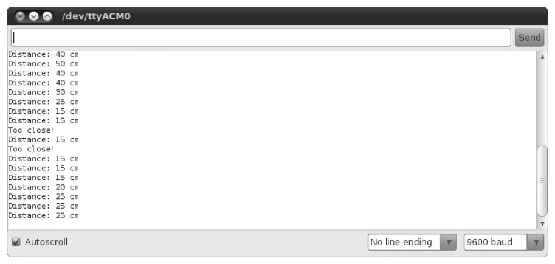

Our next method of collision avoidance uses an infrared (IR) distance sensor. This sensor bounces an infrared light signal off a surface in front of it and returns a voltage that is relative to the distance between the sensor and the surface. Infrared sensors are useful for collision detection because they are inexpensive, but they’re not ideal for exact distance measuring. We’ll use the Sharp GP2Y0A21YK0F analog sensor for our project, as shown in Figure 12-23.

Wiring It Up
To wire the sensor, connect the red and black wires on the sensor to 5 V and GND, respectively, with the white wire connecting to an analog input pin on your Arduino. We’ll use analogRead() to measure the voltage returned from the sensor. The graph in Figure 12-24 shows the relationship between the distance measured and the output voltage.

Testing the IR Distance Sensor
Because the relationship between distance and output is not easily represented with an equation, we’ll categorize the readings into 5 cm stages. To demonstrate this, we’ll use a simple example. Connect your infrared sensor’s white lead to analog pin 0, the red lead to 5 V, and the black lead to GND, and then enter and upload the sketch shown in Listing 12-2.
// Listing 12-2
float sensor = 0;
int cm = 0;
void setup()
{
Serial.begin(9600);
}
void loop()
{
❶ sensor = analogRead(0);
❷ if (sensor<=90)
{
Serial.println("Infinite distance!");
} else if (sensor<100) // 80cm
{
cm = 80;
} else if (sensor<110) // 70 cm
{
cm = 70;
} else if (sensor<118) // 60cm
{
cm = 60;
} else if (sensor<147) // 50cm
{
cm = 50;
} else if (sensor<188) // 40 cm
{
cm = 40;
} else if (sensor<230) // 30cm
{
cm = 30;
} else if (sensor<302) // 25 cm
{
cm = 25;
} else if (sensor<360) // 20cm
{
cm = 20;
} else if (sensor<505) // 15cm
{
cm = 15;
} else if (sensor<510) // 10 cm
{
cm = 10;
} else if (sensor>=510) // too close!
{
Serial.println("Too close!");
}
Serial.print("Distance: ");
Serial.print(cm);
Serial.println(" cm");
delay(250);
}The sketch reads the voltage from the IR sensor at ❶ and then uses a series of if statements at ❷ to choose which approximate distance is being returned. We determine the distance from the voltage returned by the sensor using two parameters. The first is the voltage-to-distance relationship as displayed in Figure 12-24. Then, using the knowledge (from Project 6) that analogRead() returns a value between 0 and 1,023 relative to a voltage between 0 and around 5 V, we can calculate the approximate distance returned by the sensor.
After uploading the sketch, open the Serial Monitor and experiment by moving your hand or a piece of paper at various distances from the sensor. The Serial Monitor should return the approximate distance, as shown in Figure 12-25.
